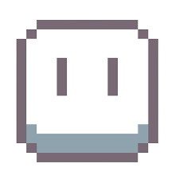
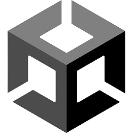

Sobre o Jogo
A História
Transportado para o passado, deverás explorar a vila e os seus arredores para encontrar a fonte da propagação do vírus.
Aliados e Inimigos
- O Ferreiro: O teu guia principal. Ele fornecerá missões essenciais para obteres o equipamento necessário.
- O Mago: O guardião do tempo que te enviou nesta jornada.
- O Boss (Tengu): Uma criatura lendária que guarda os segredos do vírus.
Aplicações utilizadas
|
 Aseprite - Utilizado para a criação dos sprites |
Visual Code - Utilizado para a criação dos scripts |
 Unity - Engine utilizada para a criação do jogo |
*/nEW*/
Canva - Utilizado para a organização do mapa |
Photopea - Site utilizado para a criação do cartaz |
 Github - Site utilizado para o upload do site |
Mega - Site utilizado para o armazenar o download do jogo |